1 START · f 0 · 0.00 s
CAMwhole · 24 mm · passes, no rest
MOVEmaster: hands_hips, proud
WORD(none) · shows watch
1 END · f 0 · 0.00 s
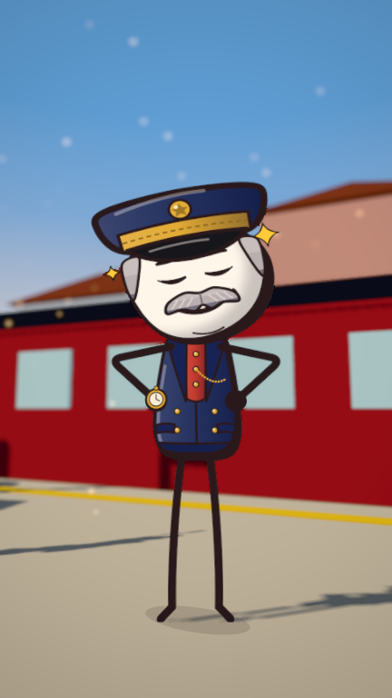
CAMthen 2.73 s move to whole
MOVEmaster: hands_hips, proud
WORD(none) · shows watch
2 START · f 82 · 2.73 s
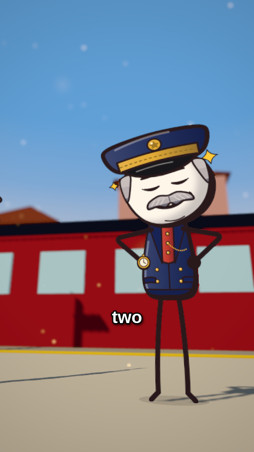
CAMwhole · 24 mm · rest 0.4 s
MOVEmaster: hands_hips, proud
WORD"clocks" · shows train
2 END · f 93 · 3.10 s
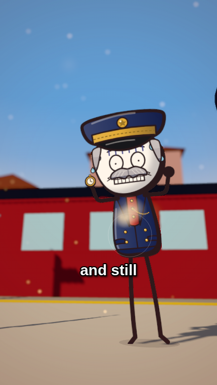
CAMthen 0.53 s move to medium
MOVEmaster: flinch, terrified
WORD"clocks" · shows train
3 START · f 110 · 3.67 s
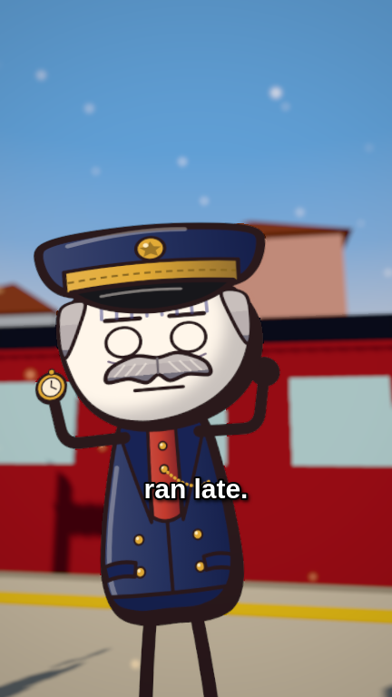
CAMmedium · 24 mm · rest 0.4 s
MOVEmaster: flinch, deadInside
WORD"late" · shows watch
3 END · f 121 · 4.03 s
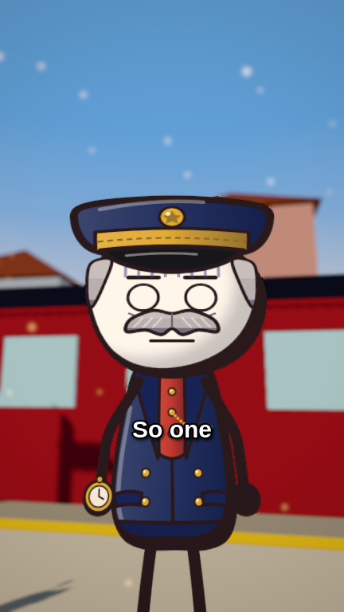
CAMthen 1.27 s move to whole
MOVEmaster: stand, deadInside
WORD"late" · shows watch
4 START · f 160 · 5.33 s
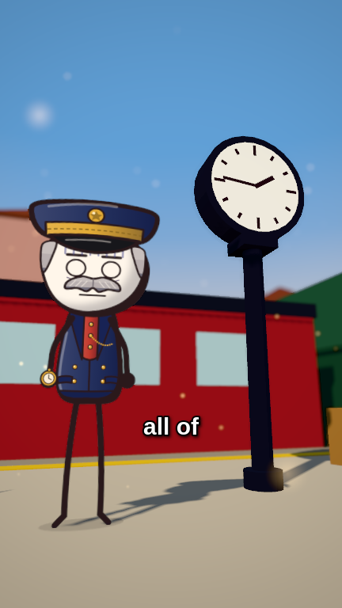
CAMwhole · 24 mm · rest 0.27 s
MOVEmaster: stand, deadInside
WORD"Britain" · shows clock
4 END · f 167 · 5.57 s
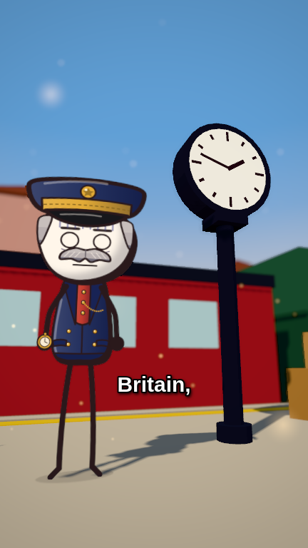
CAMthen 0.23 s move to medium
MOVEmaster: stand, deadInside
WORD"Britain" · shows clock
5 START · f 175 · 5.83 s
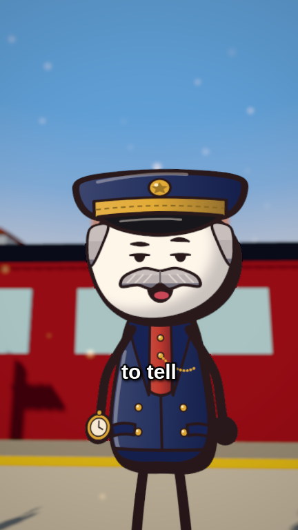
CAMmedium · 24 mm · rest 0.4 s
MOVEmaster: stand, deadInside, talking
WORD"tell"
5 END · f 186 · 6.20 s
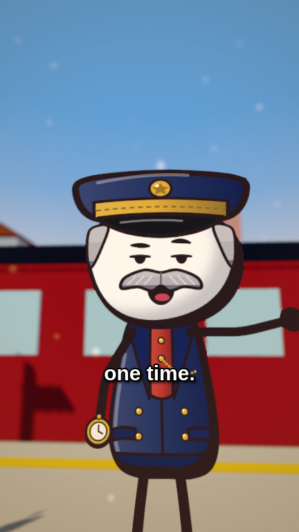
CAMthen 1.67 s move to whole
MOVEmaster: point_out, standard, talking
WORD"tell"
6 START · f 237 · 7.90 s
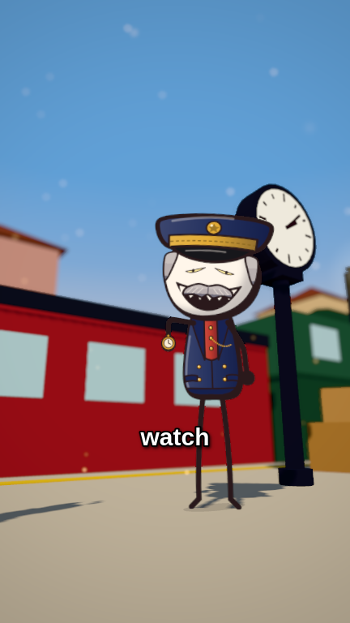
CAMwhole · 24 mm · rest 0.37 s
MOVElady: show_wrist, starstruck
WORD"lies" · shows clock, lady, watch
6 END · f 247 · 8.23 s
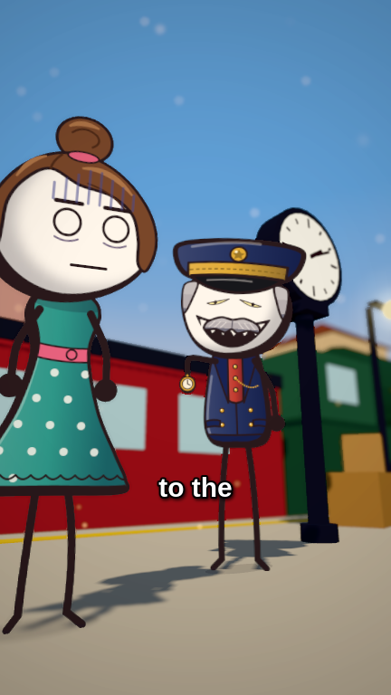
CAMthen 0.37 s move to whole
MOVElady: stand, deadInside
WORD"lies" · shows clock, lady, watch
7 START · f 259 · 8.63 s
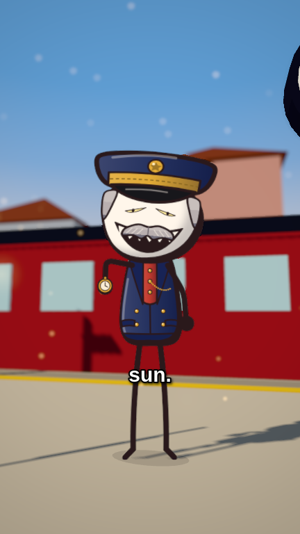
CAMwhole · 24 mm · rest 1.37 s
MOVEmaster: hold_watch, evil
WORD"sun,2" · shows watch
7 END · f 299 · 9.97 s
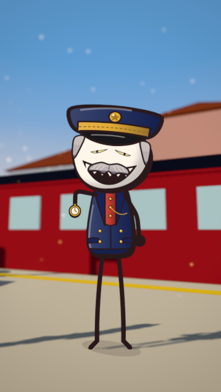
CAMlast frame
MOVEmaster: hold_watch, evil
WORD"sun,2" · shows watch